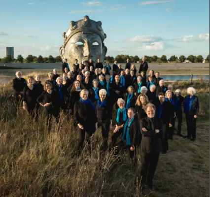

Dit evenement is afgelopen. Bekijk wat er binnenkort te doen is.
Evenement
Open repetities Toonkunstkoor Nijmegen
- Wanneermaandag 14 september 2026, 19.30 tot 22.00 uur
- WaarArk van Oost
Cipresstraat 154 Route

Heb je altijd al een repetitie van een groot, ambitieus koor willen meemaken?
Toonkunstkoor Nijmegen houdt open repetities op de maandagen 14, 21 en 28
september 2026. Je kunt dan met het koor kennismaken en meezingen.
De repetities zijn in de Ark van Oost aan de Cipresstraat 154 in Nijmegen van 19.30 tot 22.00 uur.
Je kunt je tevoren aanmelden bij ledenadministratie@toonkunstkoornijmegen.nl of via een
telefoontje naar Annemiek Vissers: 06-57855837. Zij zorgt voor een partituur ter uitleen. Die
krijg je dan op de avond dat je komt.
Zangers uit alle stemgroepen zijn welkom. Vooral tenoren!!
Binnenkort in Nijmegen
24okt UitgelichtSean Taylor24 okt, 20.00 uurDe Brauerij
25okt
UitgelichtSean Taylor24 okt, 20.00 uurDe Brauerij
25okt UitgelichtHighlight Tours in het Vrijheidsmuseum25 okt, 14.00 uurVrijheidsmuseum
25okt
UitgelichtHighlight Tours in het Vrijheidsmuseum25 okt, 14.00 uurVrijheidsmuseum
25okt Uitwisselingsconcert Harmonie Hatert met DOV Wijchen25 okt, 13.00 uureen wandeling met verhaklen die begint bij terras In de Kazerne en eindigt bij Cafe Jos aan de Daalseweg 309
27okt
Uitwisselingsconcert Harmonie Hatert met DOV Wijchen25 okt, 13.00 uureen wandeling met verhaklen die begint bij terras In de Kazerne en eindigt bij Cafe Jos aan de Daalseweg 309
27okt Filmvertoning: Het land van mijn ouders27 okt, 19.00 uurHuis van de Nijmeegse Geschiedenis
Filmvertoning: Het land van mijn ouders27 okt, 19.00 uurHuis van de Nijmeegse Geschiedenis
UitgelichtSean Taylor24 okt, 20.00 uurDe Brauerij
25oktUitgelichtHighlight Tours in het Vrijheidsmuseum25 okt, 14.00 uurVrijheidsmuseum
25oktUitwisselingsconcert Harmonie Hatert met DOV Wijchen25 okt, 13.00 uureen wandeling met verhaklen die begint bij terras In de Kazerne en eindigt bij Cafe Jos aan de Daalseweg 309
27oktFilmvertoning: Het land van mijn ouders27 okt, 19.00 uurHuis van de Nijmeegse Geschiedenis